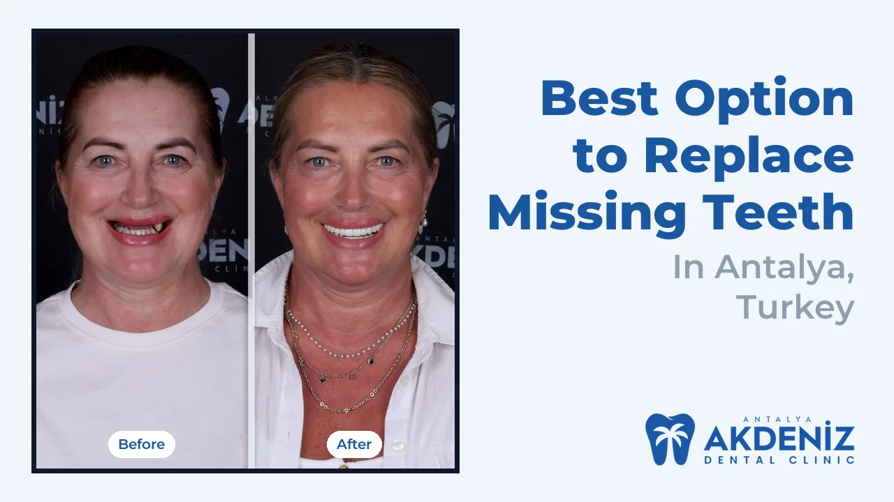

Для большинства людей, у которых нет одного или нескольких зубов и достаточно здоровой костной ткани, зубные импланты — лучший вариант в Анталье, Турция: соседние зубы остаются нетронутыми, а челюстная кость продолжает получать нагрузку. Но положение соседних зубов, объём кости, общее состояние здоровья и количество поездок, которые может совершить пациент, иногда говорят в пользу мостовидного протеза.
Как выбрать лечение при отсутствии зубов в Анталье: какой вариант подходит вам?
Начинайте с промежутка, а не с прайс-листа. Стоматологи в Анталье обычно сначала оценивают три вещи: сколько зубов отсутствует, в каком состоянии соседние зубы и сколько осталось кости.
| Ваша ситуация | Что обычно рассматривают в первую очередь |
|---|---|
| Нет одного зуба, соседние зубы здоровы, кости достаточно | Одиночный имплант |
| Нет одного зуба, соседним зубам уже нужны коронки | Мост или имплант |
| Нет одного зуба, соседние зубы наклонились в промежуток | Нужна более детальная оценка |
| Нет нескольких зубов подряд | Мост с опорой на импланты |
| Нет большинства или всех зубов на челюсти | All-on-4 или All-on-6 |
| Недостаточно кости | Костная пластика или мост |
Конечно, таблица никого не осмотрит. Считайте её отправной точкой.
Зубные импланты при отсутствии зубов в Анталье, Турция
Имплант — это небольшой титановый стержень, который устанавливается в челюстную кость. Он заменяет корень и служит опорой для коронки.
Многие пациенты склоняются к имплантам по двум причинам. Зубы рядом с промежутком остаются нетронутыми, а жевательная нагрузка продолжает передаваться на кость (которая обычно уменьшается после потери корня).
Когда имплант — не лучший выбор?
Иногда дело в общем состоянии здоровья. Некомпенсированный диабет, интенсивное курение и нелеченые заболевания дёсен повышают риск отторжения импланта, поэтому их нужно взять под контроль до операции.
А иногда дело в соседних зубах.
Если зуба нет много лет, соседние зубы могут сместиться, наклониться и стоять теснее. Промежуток постепенно сужается, и оставшегося места может не хватить для импланта. Положение важно, даже если имплант помещается. Из-за смещения соседних зубов между коронкой на импланте и соседними зубами может остаться треугольное пространство.
В этом пространстве застревает пища. Поэтому со временем очень важно тщательно очищать эту зону: плохая гигиена может сократить срок службы импланта.
Таким образом, у пациента в такой ситуации есть два реальных пути:
- Оставить имплант и очень тщательно чистить эту зону каждый день, чтобы его защитить.
- Выбрать вместо этого мостовидный протез, если такой режим ухода кажется нереальным.
В некоторых случаях ортодонтическое лечение также может сдвинуть зубы и снова открыть место до установки импланта. Онлайн-консультация поможет понять, какой путь имеет смысл.
Традиционные мостовидные протезы в Анталье: когда они уместны?
Традиционный мост закрывает промежуток искусственным зубом, который держится на коронках, установленных на зубы с обеих сторон. Без операции. Без долгого ожидания заживления.
Подвох в том, что соседние зубы приходится обтачивать, и это необратимо. Если они здоровы и нетронуты, это реальная цена. Если же в них большие пломбы или им уже нужны коронки, мост выглядит гораздо разумнее.
Мост также подходит пациентам, которые не хотят операции или у которых слишком мало кости, а костной пластики они предпочли бы избежать. Однако мост не заменяет корень, поэтому кость под искусственным зубом всё равно может уменьшаться. А зону под ним нужно ежедневно очищать с помощью нитевдевателей или маленьких межзубных ёршиков.
Мосты с опорой на импланты при отсутствии нескольких зубов в Турции
Если подряд нет трёх зубов, это не всегда означает три импланта. Часто два импланта могут удерживать мост на всём промежутке — это меньше хирургии и никакого обтачивания собственных зубов.
Подойдёт ли такой вариант, зависит от расположения промежутка, прикуса и имеющейся кости.
Нет всех зубов? Варианты для всей челюсти в Анталье
Когда на челюсти нет большинства или всех зубов, восстанавливать их по отдельности уже не имеет смысла. При лечении всей челюсти несъёмный зубной ряд устанавливают на небольшое количество имплантов: четыре при All-on-4, шесть при All-on-6. Тем, кто сейчас носит съёмный протез, будет полезно прочитать об имплантации после съёмных протезов.
Что будет, если не восстанавливать отсутствующие зубы?
Поначалу почти ничего — именно поэтому люди и откладывают.
Затем изменения постепенно накапливаются. Кость в пустом участке уменьшается. Соседние зубы смещаются в промежуток, а зуб-антагонист может выдвигаться из своего положения, потому что ему не во что упираться. Жевание переходит на другую сторону.
Всё это не означает экстренной ситуации. Но со временем выбор вариантов может сужаться, и промежуток, оставленный на годы, может потребовать больше работы, чем недавний.
Сколько поездок в Анталью нужно для каждого вида лечения?
Сроки у каждого пациента разные, но обычно схема такая:
- Традиционный мост: обычно одна поездка.
- Одиночный имплант или мост с опорой на импланты: обычно два визита с перерывом в несколько месяцев на заживление.
- All-on-4 или All-on-6: обычно два визита; в период заживления — временные зубы, в зависимости от пациента.
- С костной пластикой или синус-лифтингом: заживление может занять больше времени, поэтому второй визит может сдвинуться.
Сколько стоит восстановить отсутствующие зубы в Турции?
Цены, которые указывают клиники в Турции, начинаются примерно от £400 за одиночный имплант с коронкой и примерно от £450 за мост из трёх единиц. Это общие стартовые цены на рынке, а не расчёт стоимости.
Итоговая сумма зависит от марки импланта, материала коронки, количества зубов и дополнительных процедур, таких как удаление или костная пластика. Поэтому уточняйте письменно, что входит в цену. Абатмент? Коронка? Снимки? Временные зубы? Низкая цена в рекламе может не включать часть этого.
Оплатите восстановление зубов частями
Планируете восстановить отсутствующие зубы в Анталье? Узнайте, как профинансировать лечение через Ideal4Finance с индивидуальными вариантами ежемесячных платежей.
Как стоматологи в Анталье выбирают подходящее лечение?
Сначала осмотр, потом рекомендации.
Полноценная оценка включает зубы и дёсны, прикус, историю болезни, курение и состояние кости, обычно с 3D-снимками. Она включает и вопрос, который пациенты часто упускают: какой уход человек реально сможет поддерживать дома? Имплант, требующий скрупулёзной чистки, плохо подходит тому, кто не будет этого делать. Хороший план это учитывает.
Спросите, почему рекомендован именно этот вариант, а не другие. Понятный ответ должен касаться ваших собственных зубов, а не только самого лечения.